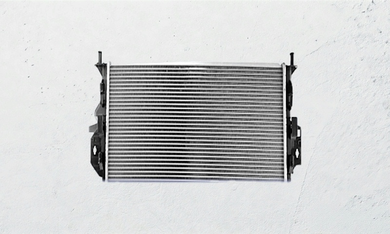
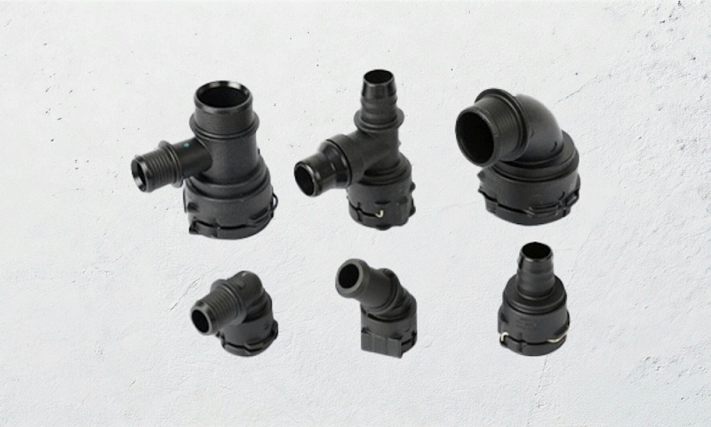
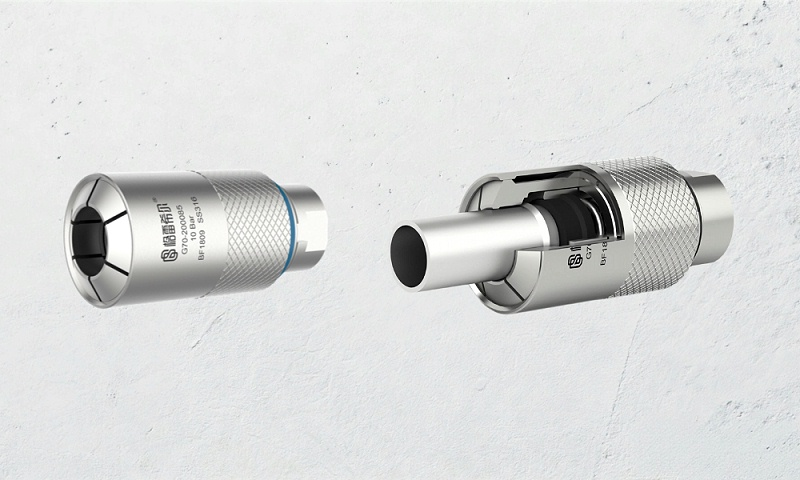
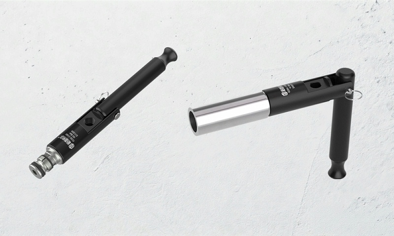

Why radiator leak testing demands more from connectors
Background
Whether in the engine water cooling system of a conventional vehicle or the thermal management circuit of an EV battery and drive motor, the radiator is the core heat exchange component. A radiator assembly is built from an aluminium main plate, inlet/outlet chambers and sealing gaskets pressed together, and welded and joined areas must be leak tested as a whole before shipment. As thermal management efficiency requirements rise, test frequency and takt pressure both increase, so sealing connectors at test stations must deliver both operating efficiency and reliability.
Port shape determines the sealing method
Port Types
Radiator inlet and outlet ports are not a single shape. Under the VDA specification commonly used in the automotive industry, typical ports include beaded barbs, grooved tubes with retaining grooves and straight smooth tubes. Each demands different connector fit: a tight seal without hard contact scratching the tube wall, avoiding leak risk from poor mating between the seal and surface defects during final assembly.
Bead / barb: G70 external clamp
G70 SeriesFor irregular beaded tube ends or barb ports, use the G70 Series external-clamp quick seal connectors. This series uses a sliding-sleeve push/pull design: the operator pushes the connector onto the port one-handed and internal jaws with a face seal form a stable sealed chamber for instant connection. The straight-through structure reduces flow loss so the leak detector reading reflects the part more accurately; the face seal is a replaceable wear part for easy line maintenance; knurling on the housing improves grip for stable one-handed operation.

Straight smooth tube / interference: G35 internal expansion
G35 SeriesFor radiators with straight smooth tube designs, or where nearby interference makes an external-clamp connector impractical, use the G35 Series internal-expansion quick seal connectors. G35 uses high-hardness internal jaws to lock onto the tube wall with a 90° folding lever; the pressure-assisted sealing principle expands the seal radially as test pressure rises, keeping a reliable seal under high pressure, up to 70 Bar (depending on tube material).

Combined selection and station integration
IntegrationCombining G70 and G35 covers plugging at different positions such as main inlet/outlet lines and bypass ports in radiator manufacturing. Both offer standard side G-thread or ZG-thread ports for direct connection to the leak detector air supply without adaptors, simplifying station layout. Beyond radiators, the same approach extends to air-tightness testing of oil coolers, battery pack cold plates and other thermal products; with standard Neoprene or NBR seals compatible with the tube material, connectors keep stable sealing in routine high/low temperature cycling, ensuring accurate and repeatable results.
Related Products
RelatedG70 external-clamp tube end seal connector
External-clamp sealing for beaded, flanged and irregular tube ends.
G35 straight / flared tube connector
Internal-expansion sealing for straight smooth and flared tube ports.
Quick Seal Connectors Overview
Browse all series by connection type, or use the selection matrix to locate a model.